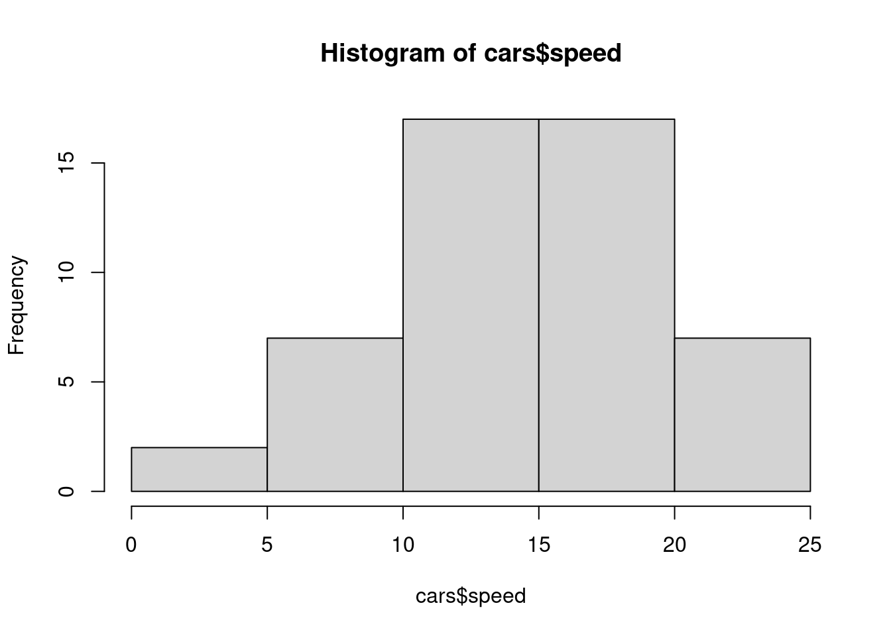

Shapiro-Wilk normality test
data: cars$speed
W = 0.97765, p-value = 0.4576
Decision: P-value is greater than 0.05, then we fail to reject \(H_0\). There is evidence to support that speed data is normally distributed with mean = 15.4 and variance = 27.9591837.
Lilliefors Test for Normality
library(nortest)lillie.test(cars$speed)
Lilliefors (Kolmogorov-Smirnov) normality test
data: cars$speed
D = 0.068539, p-value = 0.8068
Decision: P-value is greater than 0.05, then we fail to reject \(H_0\). There is evidence to support that speed data is normally distributed with mean = 15.4 and variance = 27.9591837.
Kolmogorov Smirnov Test
# Test for N(mean_speed,sd_speed)ks.test(cars$speed,'pnorm',mean_speed,sd_speed)
Warning in ks.test.default(cars$speed, "pnorm", mean_speed, sd_speed): ties
should not be present for the Kolmogorov-Smirnov test
Asymptotic one-sample Kolmogorov-Smirnov test
data: cars$speed
D = 0.068539, p-value = 0.9729
alternative hypothesis: two-sided
# Test for N(0,1)ks.test(cars$speed,'pnorm')
Warning in ks.test.default(cars$speed, "pnorm"): ties should not be present for
the Kolmogorov-Smirnov test
Asymptotic one-sample Kolmogorov-Smirnov test
data: cars$speed
D = 0.99997, p-value < 2.2e-16
alternative hypothesis: two-sided
Chi-squared Test
h =hist(cars$speed) # hist of data

Ob = h$counts # observed frequencies in classesp1 =pnorm(5,mean_speed,sd_speed)# P(X <= 5)p2 =pnorm(10,mean_speed,sd_speed)-pnorm(5,mean_speed,sd_speed) # P(5<=X <= 10)p3 =pnorm(15,mean_speed,sd_speed)-pnorm(10,mean_speed,sd_speed) # P(10<=X <= 15)p4 =pnorm(20,mean_speed,sd_speed)-pnorm(15,mean_speed,sd_speed) # P(15<=X <= 20)p5 =1-pnorm(20,mean_speed,sd_speed) # P(X> 20)Pj =c(p1,p2,p3,p4,p5) # put everything in one arraysum(Pj) # is it = 1?
Warning in chisq.test(x = Ob, p = Pj): Chi-squared approximation may be
incorrect
Chi-squared test for given probabilities
data: Ob
X-squared = 1.3267, df = 4, p-value = 0.8568
The degrees of freedom of the test is \(df = C-1-k = 5 -1 - 2 = 2\). K=2 because we did estimate the mean and variance from the sample.
Adjust for degrees of freedom:
pvalue <-1-pchisq(1.3267,df=2)pvalue
[1] 0.5151228
Example with Binomial distribution
Binomial Example : pp.244 18 baseball players with 45 times at-bat. We have the number of hits.
# hits
<=7
8
9
10
11
12
13
14
15
16
17
# players
1
1
1
5
2
1
1
2
1
1
1
Consider X is the # hits, X \(\sim\) binom(n= 45, p=? )
Ob=c(1,1,1,5,2,1,1,2,1,1,1,1)# Estimate p- probability that a player will get a hit at-bat.# p = #hits/total #of at-batsp=sum((7:18)*Ob) / (18*45)p1 <-pbinom(7,45,prob = p)p2 <-dbinom(8:17,45,prob = p)p12 <-pbinom(17,45,p,lower.tail = F)Pj <-c(p1,p2,p12)Ej=Pj*18# Chi-squared test chisq.test(x=Ob,p=Pj)
Warning in chisq.test(x = Ob, p = Pj): Chi-squared approximation may be
incorrect
Chi-squared test for given probabilities
data: Ob
X-squared = 6.7313, df = 11, p-value = 0.8204
Since the expected values are less than 5. We combine classes.